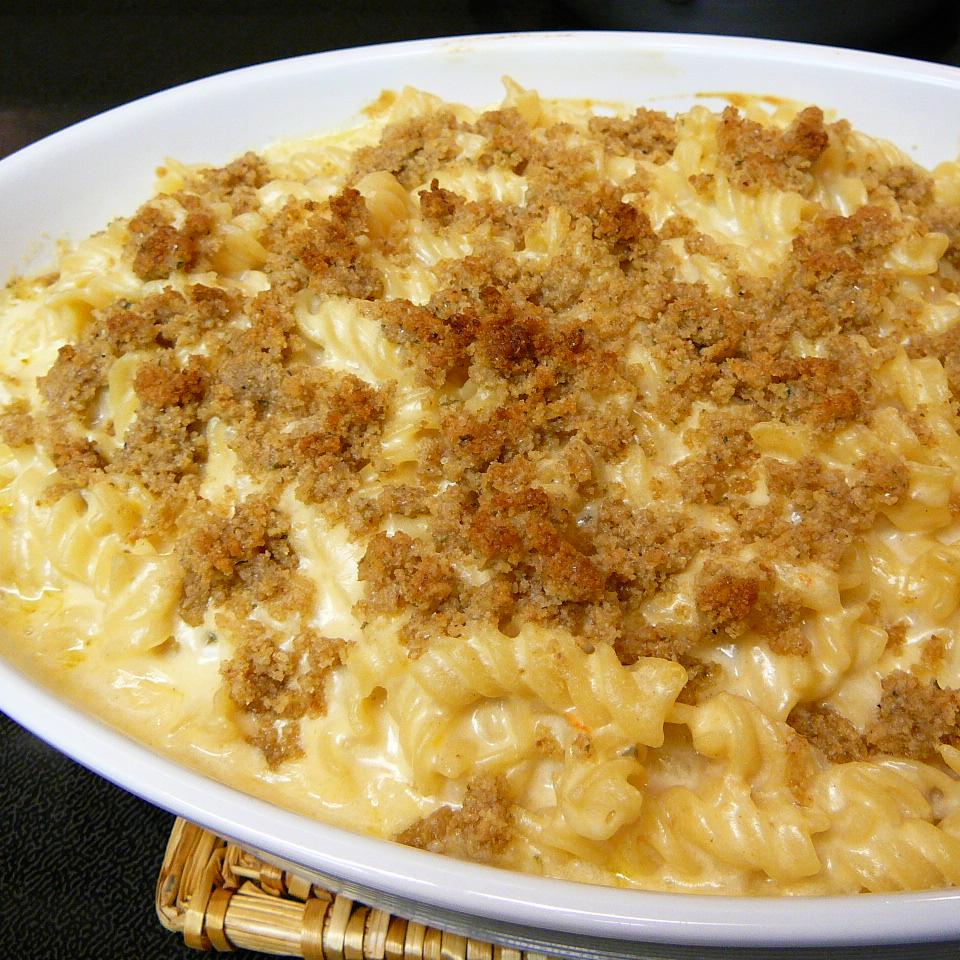

Mac and Cheese

Description
If you are looking for the cheesiest and most
orgasmic mac and cheese you have every had in you life,
then look no further. This recipe will be perfect for the whole family
and keep them all coming back for more!
Prep: 30 mins, Cook: 40 mins, Total:
1 hr 10 mins, Servings: 8, Yield: 8 servings
Ingredients
- 1 1/2 cups rotelle pasta
- 4 tablespoons butter, (divided)
- 1/4 cups all-purpose flour
- 3 cups whole milk
- 1 teaspoon dry mustard
-
- 1/2 teaspoons ground white pepper
- 3 teaspoons hot pepper sauce
- 1 cup shredded pepper-jack cheese
- 1 1/2 cups shredded sharp cheddar cheese
- 1/2 cup grated parmesan cheese
- 1/3 cup dry bread crumbs
- 2 teaspoons chili powder
Steps
-